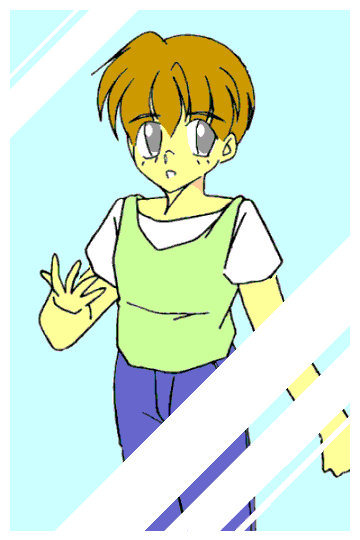

「ふぁーよく寝た」
あたしはそう言って起きた。いつも通り学生服に着替え始める。
はたして昨日、機械に入力したことは本当に叶うのだろうか。
それは今日、この一日でわかるだろう。
そう思い、昨日と同じように機械を机の引き出しにしまった。
そして、学校へ向かった。変化がおきることを知らずに……
ありえない出来事
第３話 不思議な力
作：まなちゃん
キーン、コーン、カーン、コーン……
その日の授業の終了のチャイムが鳴った。
今日は掃除が無いので、あたしはそのまま下校しようとした。
「おーい。高野ー」
「高野くーん」
あたしを呼び止めたその声のほうを見ると水元君と伊藤君が駆け寄って来るのが見えた。
「なーに？ 水元君、伊藤君」
あたしは立ち止まって二人に聞いた。
「一緒に帰ろうぜ」
「僕も」
「え？ いいよ」
あたしは二人と道を歩き始めた。
紹介しよう。今、あたしと歩いているのは水元君と伊藤俊助（いとう・しゅんすけ）君である。
水元君は前も言った通り、中学の時からの同級生で今では親友になっている。
伊藤君はあたしが高校生になってからの友達である。
「ひさしぶりだね。三人で一緒に帰るの」
あたしはそう二人に言った。
「それもそうだなー」
水元君は思い出し口調にそう言った。
「ごめんね。僕、いろいろ忙しかったから」
すまなそうに伊藤君が言った。
「あやまることないよ」
「俺もそう思う」
伊藤君を励ますためにあたしと水元君はそう言った。
「ありがとう。二人とも」
伊藤君の表情が少し明るくなった。その後、いろいろなことを二人と話した。
話しているうちにいつもの別れる場所に来た。「じゃ、また明日な」
「また明日ねー」
「うん、じゃーねー」
あたしはそう言って二人と別れた。
しばらくして家に着いた。あたしは玄関の扉を開ける。
「ただいまー」
「おかえり。友也」
お母さんがいつも通り玄関に出てきた。……！ 何か違う。あたしはお母さんの足元を見た。
「あれ？ お母さん、あのくせ直ったの？」
「そうよ。今日、突然直っちゃったの」
お母さんの言う通り、片足立ちで覗き込むくせは直っているようだった。
その後、お風呂を済ませて自分の部屋へ向かった。そして、あの機械を取り出した。
どうやらあたしの願いは叶ったみたいだ。昨日、機械に入力した願いは、「お母さんのくせが直りますように」だった。それが叶ったのだ。
まさかとは思いつつ、昨日の入力したものを見てみた。入力した願いは叶ったためか、もう、すでに消去されていた。どうやら機械のほうで自動消去したらしい。
ちなみにこの願いはあたしが高校生になってから毎晩、寝る前に心の中で唱えてたことである。
今晩からその願いを唱える必要は無くなった。
本当にこの機械が願いを叶えてくれたのかな？
そう思い、あたしは少し期待して次の願いを打ち込んでみた。
そして画面には、「受付完了。変更可能回数は残り３回です」と表示された。
明日が楽しみだ。そう思ってあたしは眠った。
ちゅんちゅん……
「んー……」
あたしはベットの中で大きく伸びをした。今日は学校が休みである。今日はやりたいことを思う存分楽しむことができる。あたしは居間へ向かった。
「おはよう、お母さん」
「おはよう、友也」
あたしはお母さんとあいさつをした。その時、「おう、友也、おはよう」という声が聞こえた。
「お、お父さん？ 仕事は？」
あたしはびっくりしてお父さんに聞いた。
「会社から『今日は休み』って電話があったんだ」
「ふーん。めずらしいねー」
実はお父さんはこのところ仕事が忙しく、家に帰ってこなかったのだ。
「今日は家族でどこかに行くか」
お父さんがひとつ提案を出した。
「「賛成ー！」」
あたしとお母さんは同時にそう言った。
「今日は楽しかったね」
あたしはそう言った。
「それは良かった。だけど俺、明日からまた仕事だからな」
お父さんがそう答える。
「うん、わかってる」
あたしは自分の部屋であの機械をながめた。今回も願いは叶った。今回の願いは、「お父さんが帰ってきますように」だった。またもその願いは叶った。
やはりこの機械が叶えてくれた（？）ようだ。あたしは、「でもただの偶然かも」と思った。
あたしはためしにもう一度別の願いを入れてみた。画面にはいつもの「受付完了」が表示された。
あたしは機械をしまって眠りに入った。
キーン、コーン、カーン、コーン……
タッタッタッタ……「た、高野、一緒に……帰ろうぜ」
「どうしたの？ そんなに急いで」
あたしは息を切らして走ってきた水元君に聞いた。
「いや、今日は……高野に聞きたいことが……あってな」
水元君は呼吸を整えながら答えた。
「ふーん。でも、走ってくる必要ないんじゃない？」
「ゆっくり歩きながら聞きたいからだ」
あたしは納得した。ようするに聞きたいことは、「すぐには答えられないこと」だ。
だから、ゆっくり帰っても遅くならないように早く来たのだ。
「で？ 聞きたいことって何？」
あたしはゆっくり歩きながら水元君に聞いた。
「こんなこと聞くのは……どうかと思うけど……」
前置きのように水元君が言った。「……なんでおまえ高校生になってから、自分のこと『あたし』って呼んでんだ？」
「え？ 聞こえない」
あたしは小声で話す水元君にそう言った。
「だから、なんで……おまえ自分のこと『あたし』って呼んでんの？」
「……！」
あたしは驚いて声も出なかった。
「前から気になってたけど、おまえに悪いかなと思ってな」
「それは……その〜……」
あたしは返事に困ってしまった。
「うーん……明日答えるよ」
あたしは悩んでそう答えた。
「わかった。明日な」
水元君はそう言った。
しばらくしていつもの別れる場所に来た。
「じゃ、答え明日な」
「わかってる……」
あたしはそう言って水元君と別れた。
がらがらがら……
「ただいま〜……」
「お帰り。あら、元気ないわね。何かあったの？」
表情が暗いあたしにお母さんが心配そうに尋ねる。
「うん。ちょっとね……」
あたしは自分の部屋であの機械を眺めた。
今回はもちろん願いは叶った。今回は「親友が隠していることを知りたい」だった。
理由は最近水元君の様子がおかしかったからだ。
でも、こんなことを隠していたなんて……
（そのころ水元君は……）
「やっぱりまずかったかなー」
俺は思わずそうつぶやいた。
今は自分の部屋にいて今日、高野に言ったことを少し後悔している。
高野は中学のときは、自分のことを『僕』と言っていた。それが高校生になったとたん『あたし』になったのだ。
理由は知らないが、正直それは気になっていた。
そのことを高野に聞こうとしたが、聞けなかった。
それが今日、なぜかすんなり聞けたのだ。不思議なこともあるものだ。
このことは明日、高野が答えてくれるだろう。とにかく今日はもう寝よう。
そう思って俺は布団に入った。
（ふたたび高野君の部屋）
「はぁ〜……」
あたしはおもわず深いため息をついた。
これからどうしよう……
そう思いつつあの機械を見た。
うーん………………………………………………………
あれしかないよねー。
ふと思いついて機械にそれを入力する。
これで本当に解決できるだろうか？ 三つ願いを叶えてくれたからさすがに期待している。
しかし、今回ばかりは少し不安である。心配しながらあたしは眠った。

（続く）
おことわり
この物語はフィクションです。物語に出てくる 人物、団体は全て架空の物です。実際の物とは全く関係ありません。
〜あとがき〜
こんにちは。第３話いかがでしたか？ 正直、日常のことを書きすぎたかなと思っています。
女の子になってしまった高野君はどうなるのか。それは次回をお楽しみに！
□ 感想はこちらに □